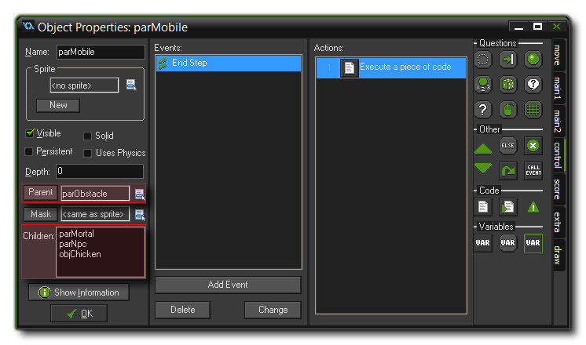
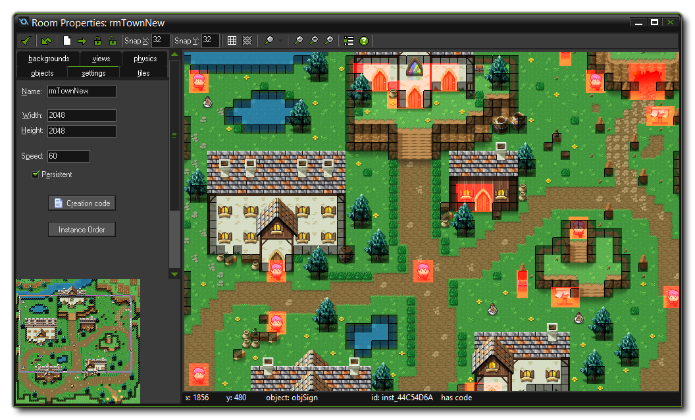
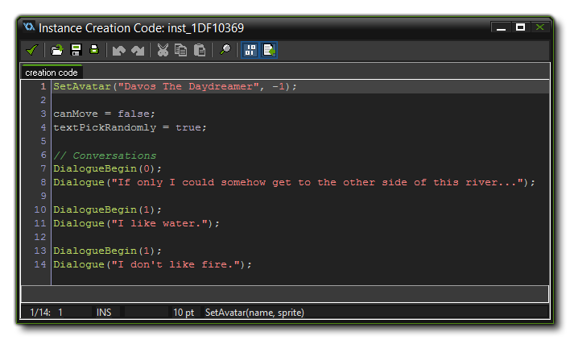

The YoYo Games RPG engine is programmed around two core concepts: Parenting and instance creation code. The combination of these two systems is what makes this engine so flexible and also what
makes it so easy to use. We will now explore each of these themes and explain in a bit more detail how they are used and why they are so important.
GameMaker: Studio permits you to group objects together to form parent/child hierarchies. What this means is that you can create two objects and make one the parent of the other. The other object would then become the first object's child. Child objects inherit the events that their parent object has, so if our parent has a Create Event, our child will too. However, if we then add a Create Event to the child object, this will over-ride the parent create event and be run instead. If this is not what is required, you can have the child object run the parent event code and it's own using the special function call event_inherited().
NOTE: You can find further information on parenting from the GameMaker: Studio Manual - Parents
In our RPG engine, parenting plays a very important part, and most objects are actually children of one or more parents. In this way the engine provides a large scale method for changing essential gameplay
elements from only a few basic parent objects, and then lets you fine tune and control more detailed options within the children objects themselves. This structure also helps greatly when it comes to doing
collision checks an other engine specific functions by permitting you to check for a single parent rather than a number different child objects.
A good example of how this parenting hierarchy works can be found in the "Mobile" Objects folder in the resource tree:

This parent is itself the child of the object "parObstacle" and has two other parent objects (which have their own child obejcts too) as well as an object as it's children. The events that are in the
"parObstacle" instance will propagate down to this parent, which in turn adds it's own event and these will in turn be accessed by the child objects (or over-written if necessary).
Parenting is a very powerful tool, and you should take a moment to look at the objects labelled with the "par" prefix to get an idea of how the heiarchy of the RPG engine is structured, as it will make
exploring the code later a simpler task.
The second main core concept of the YoYo Games RPG engine is the use of the Instance Creation Code. Before explaining this further, you should open up the room editor for the room "rmTownNew".
Once you have the room open, zoom out a bit so you can see the whole area, and press the <C> on your keyboard which will highlight all the instances that have been assigned creation code to them:

The objects placed in the room that are highlighted in red are those that contain instance creation code to change their behaviour at the start of the room. This extra code is how you will control all that happens in
the game world and is your starting point for creating your own adventures using the YoYo Games RPG engine.
We will cover this in more detail later in the user manual (as well as give the available objects and the parameters that you can change for them), but for now let's just see how we open the instance creation code
window to edit it's contents:
- Open the room editor for the room "rmTownNew".
- Click on any instance of the object "objTestNPC" to select it.
- Now right click and select Creation Code from the pop up menu.
If you have followed the steps correctly, you should have opened a code editor onto the instance's creation code with something similar to the following:

The green functions that you see are scripts (colours may vary, depending on the options you have, but scripts will still be coloured differently to built-in functions). Scripts are essentially code snippets
that work like the GameMaker: Studio built in functions and are used to control the main aspects of the YoYo Games RPG engine. If you are not familiar with scripts and how they work, then please see the GameMaker:
Studio manual - Scripts.
There is one final important detail that should be mentioned about instances in the room editor. A lot of the instances in the engine are named instances. What this means is that instead of having an ID
like "inst_CCA9D338", the instance will have a name like "doorChurchEntrance". These names are defined when you place the object in the room by right-clicking on it and choosing the Rename
Object Instance and should be consistent throughout your edits and new games. When the game is compiled, they are treated as constants that "point" to the instance named.
To see examples of instance naming, you can mouse over the door objects in the room editor and you'll see that they all have unique names. In this way we can easily keep track of the position of the player within
the game world over several rooms, as well as other details in the gameplay. This feature (and the others listed above) will be explored in greater depth over the rest of the user manual.